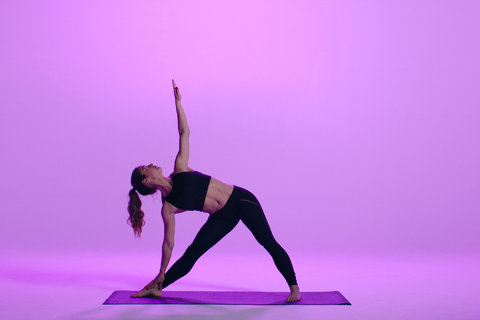

Triangle Pose
This pose can be found in many yoga sequences.

Steps:
- Take a wide stance, with your feet three and a half to four feet apart, depending on your size; taller people can take a wider stance.
- Turn your left foot slightly to the right and your right foot out to the right 90 degrees. Your front heel should be in line with the arch of your back foot. Firm your thighs and make sure that the center of the right knee is in line with the center of the right ankle.
- Inhale and raise your arms out to the sides, shoulder height.
- Exhale and reach your right arm to the right, lengthening your torso directly over the right leg as you move your hips to the left.
- Rest your right hand on your shin, ankle, or the floor outside your right foot. Keep the sides of the torso long.
- Stretch your left arm toward the ceiling, in line with the tops of your shoulders. Turn your torso up toward the ceiling. Keep your head in a neutral position or turn it to the left, eyes gazing at the left thumb.
- Stay and breathe for a minute; then come up and try the other side.